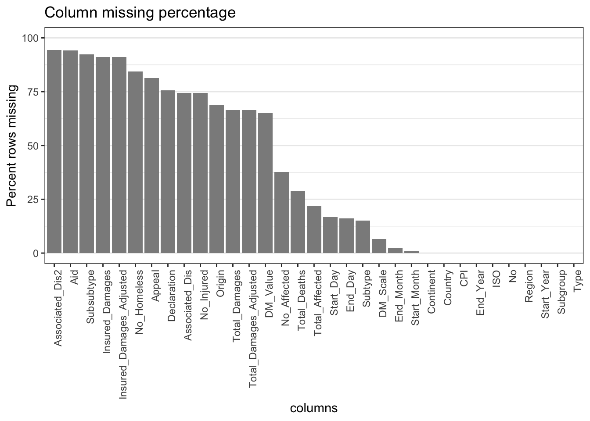
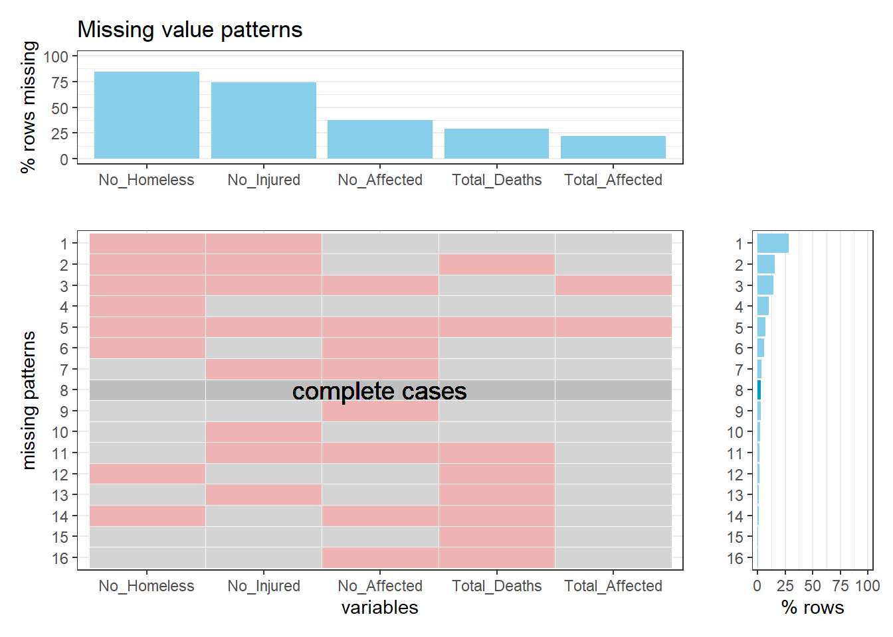
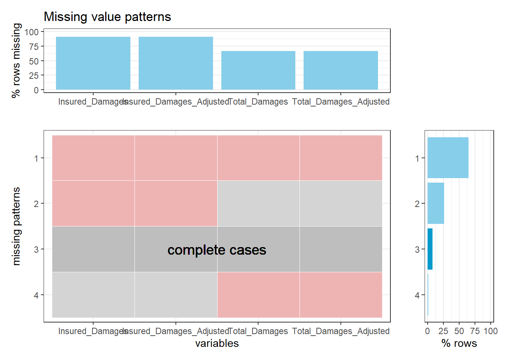
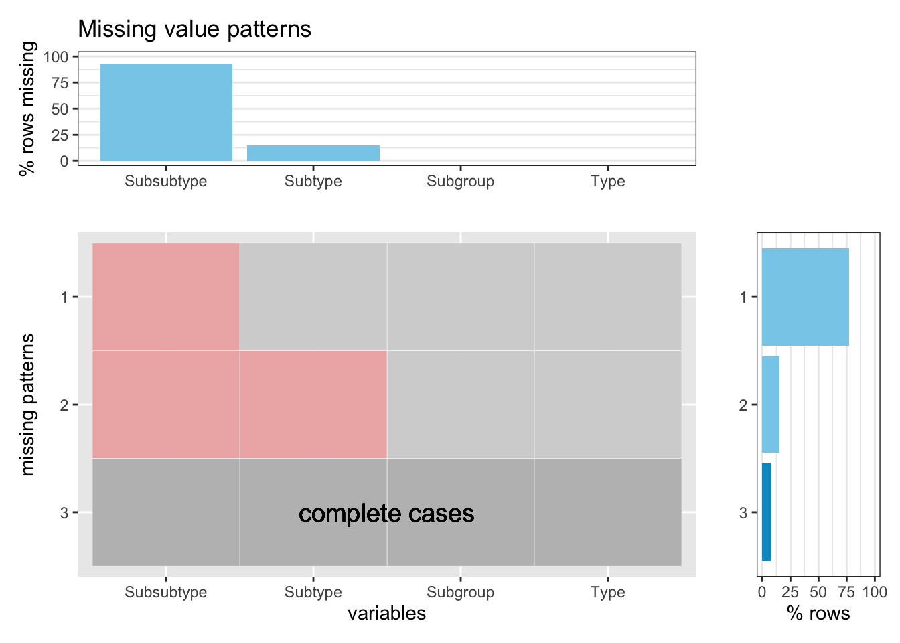

Chapter 4 Missing values
4.0.1 Missing percentage of entire data set
Plot the missing percentage of columns and sort them decreasingly.  We see that there are 14 columns that have more than 50% missing values, 9 columns that have less than 40% missing values and 10 columns that are complete. We will look into some them and briefly discuss the patterns and potential reasons behind the scene. We will also continue cleaning the data in the process.
Import function plot_patterns(df, percent = TRUE) from the .R file.
Since the data set is quite large, if we examine the missing patterns using the whole set, it is hard to view the patterns in a graph, so we divided the data into subsets and study the missing patterns separately based on the categories discussed in the previous chapter.
4.0.2 Categorization missing patterns
Column 2-4 describes the categorization of a natural disaster. Plot the missing patterns for these four attributes. Here, we see that every natural disaster has attribute Type and Subgroup, most have attribute Subtype and few has Subsubtype. From the righthandside bar plot, we see that more than 75% of the natural disasters has a three-layer categorization, and only around 10% has four-layer categorization marked as complete cases.

4.0.3 Impact data missing patterns
Column 18-23 describes human impact and economic impact of a natural disaster which will help us study the consequences of different disasters happening in different places. Here, we see that No_Homeless and No_Injured columns have the most missing value percentage around 75%, and the remaining three columns have less than 40% missing values. Shown in the pattern plot, there are few complete cases. It is understandable that such data is hard to collect and is always subject to change over the time.

Column 29-32 describes economic impact of a natural disaster which also helps us study the consequences of disasters. Here, we see that all four columns have rather high missing percentage. Shown in the pattern plot, there are few complete cases. It is understandable that such data is hard to collect and is always subject to change over the time.
